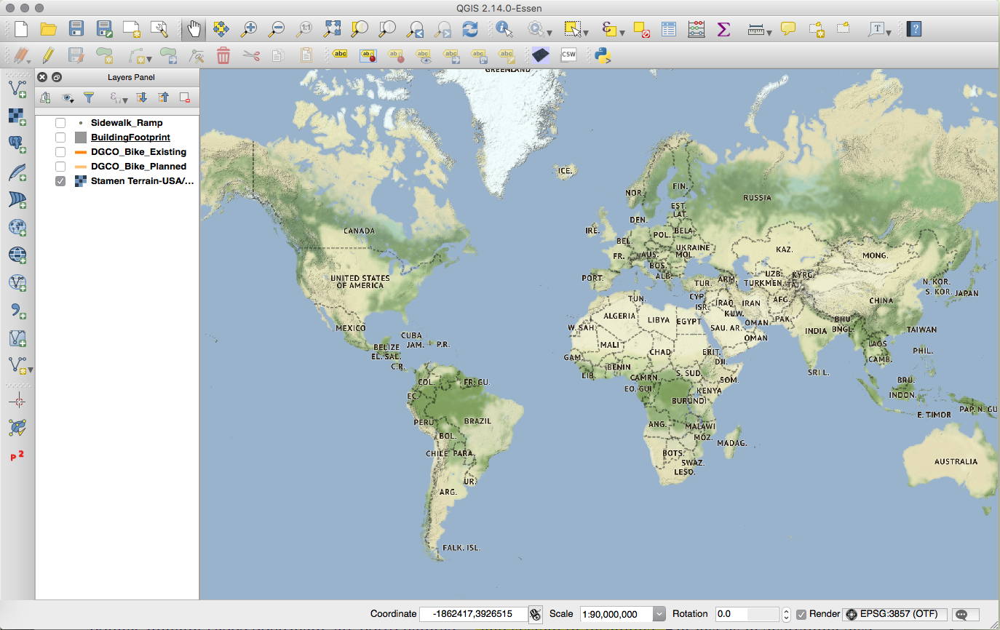
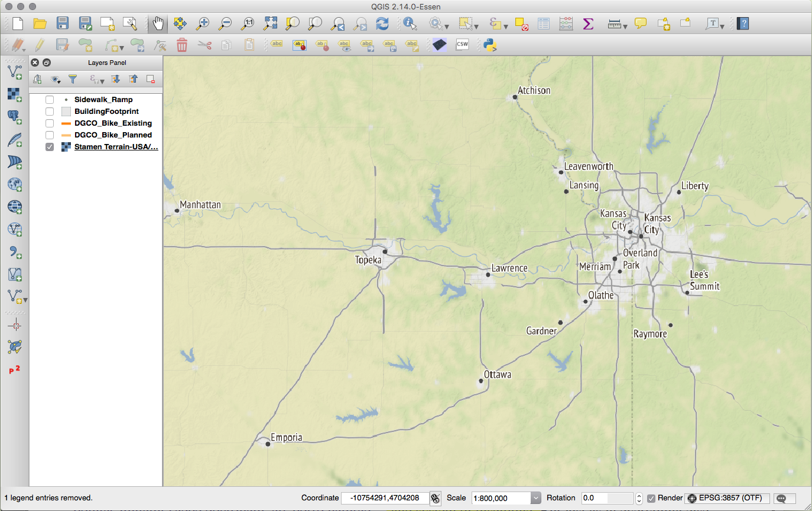

Alison Link | Academic Technologist, University of Minnesota - College of Liberal Arts
"...for example, if we wish to recall a horse, a lion, or an eagle, we must place its image in a definite background."
- Rhetorica ad Herennium, 3.16 - 24; trans. Harry Caplan (Loeb, 1954)
"...the backgrounds are very much like wax tablets or papyrus, the images like letters, the arrangement and disposition of images like the script, and the delivery is like reading."
"And these backgrounds ought to be of moderate size and medium extent, for when excessively large they render the images vague, and when too small often seem incapable of receiving an arrangement of images."
"Often in fact when we declare that some one form resembles another, we fail to receive universal assent, because things seem different to different persons. The same is true with respect to images: one that is well-defined to us appears relatively inconspicuous to others. Everybody, therefore, should in equipping himself with images suit his own convenience."
"It is a way of relating to technology that is neither entirely inside nor outside, relevant nor irrelevant, constructive nor destructive... The 'conflicted insider' techno-positionality is steeped in the technicalities of GIS, and yet seeks resistive practices, new collusions, and irreconcilables to challenge GIS at the level of code."
- Wilson, M. (2009). "Towards a Genealogy of Qualitative GIS"
"When you're in a new place, you're bombarded with all of those little nuances every single day. They add up to feeling like you are totally out of place. You look out of place. Your mannerisms, your clothes, your accent, you ability to pay the bus driver properly...all mark you as out of place to everyone else."
- E. Venditto (History)
"I am imagining in my head a Venn diagram, but it's a muddled space. It's strange [...] you can be somewhere, but you can't actually fully inhabit self in that place. It's a strange thing to try to tease out."
- M. Brito (Philosophy)
CREATE OR REPLACE FUNCTION zScore(observed_val numeric,
median numeric, margin_of_error numeric)
RETURNS numeric AS $$
BEGIN
RETURN (observed_val - median) / (margin_of_error / 1.645);
END;
$$ LANGUAGE plpgsql;
CREATE OR REPLACE FUNCTION zScoreProportion(observed_val numeric,
observed_cases_in_pop numeric, total_pop numeric)
RETURNS numeric AS $$
DECLARE
pop_proportion numeric := observed_cases_in_pop /
total_pop;
BEGIN
RETURN (observed_val - (pop_proportion)) /
sqrt(pop_proportion * (1 - pop_proportion));
END;
$$ LANGUAGE plpgsql;
"When you're dealing with historical information, it's often not specific. [...] And then we want to track change over time, and GIS is really clunky for dates. [...] We're always kind of up against that--that anything you put up on the web, and particularly through a GIS program, becomes "data". And "data" is assumed to be accurate. And historical information may not be "accurate" in that same sort of way."
- J. Kilde (History)
WITH left_join AS (
SELECT person1.time AS time1, person1.wkb_geometry AS geom1,
person2.time AS time2, person2.wkb_geometry AS geom2
FROM person_1_tracks_1 person1
LEFT JOIN person_2_tracks_1 person2 ON person2.time
BETWEEN person1.time AND person1.time + interval '1 min';
),
temporal_overlaps AS (
SELECT DISTINCT *
FROM left_join
WHERE geom2 IS NOT NULL
)
SELECT time1, time2, ST_MakeLine(geom1, geom2)
INTO time_space_diffs
FROM temporal_overlaps;
WITH left_join AS (
SELECT person1.time AS time1, person1.wkb_geometry AS geom1,
person2.time AS time2, person2.wkb_geometry AS geom2
FROM person_1_tracks_2 person1
LEFT JOIN person_2_tracks_2 person2 ON
ST_Within(person1.wkb_geometry,
ST_Buffer(person2.wkb_geometry, 5))
),
spatial_overlaps AS (
SELECT *
FROM left_join
WHERE geom2 IS NOT NULL
)
SELECT time1, time2, abs(extract('epoch' from (time1 - time2)) / 60)
AS timediff_in_mins, ST_Collect(geom1, geom2)
INTO space_time_diffs
FROM spatial_overlaps;
"I'm very attuned to this in the various classrooms that I find myself in, and I've thought a lot about it. [...] I think we're animals--I mean, I think that's a lot of what it is. It's like: I'm an animal, they're an animal, how are the animals doing?"
- L. Buturian (Literature)
WITH target_polygon AS (
SELECT gid, name, type, the_geom, ST_Centroid(the_geom)
AS centroid
FROM beijing_china_osm_landusages
WHERE gid = 175
),
target_polygon_at_origin AS (
SELECT *, ST_Translate(the_geom,
-ST_X(centroid), -ST_Y(centroid)) AS geom_trans
FROM target_polygon
),
test_polygons AS (
SELECT gid, name, type, the_geom, ST_Centroid(the_geom)
AS centroid
FROM ankara_turkey_osm_landusages
WHERE type LIKE 'park'
),
test_polygons_at_origin AS (
SELECT test.gid, test.name, test.type,
ST_Translate(test.the_geom,
-ST_X(test.centroid), -ST_Y(test.centroid))
AS geom_trans
FROM target_polygon target, test_polygons test
)
SELECT test.gid, test.name, test.type,
ST_HausdorffDistance(target.geom_trans, test.geom_trans)
AS hausdorff_distance
FROM target_polygon_at_origin target,
test_polygons_at_origin test
ORDER BY hausdorff_distance ASC;
CREATE EXTENSION hstore;
CREATE OR REPLACE FUNCTION parse_osm_heights(tags_col character,
floor_height numeric, default_height numeric)
RETURNS numeric AS $$
DECLARE
parsed_tags hstore DEFAULT NULL;
BEGIN
parsed_tags := ($1)::hstore;
IF exist(parsed_tags, 'building:height') THEN
RETURN (parsed_tags -> 'building:height')::numeric;
ELSEIF exist(parsed_tags, 'building:levels') THEN
RETURN (parsed_tags -> 'building:levels')::numeric * $2;
ELSE
RETURN $3;
END IF;
EXCEPTION
WHEN plpgsql_error THEN RETURN $3;
WHEN invalid_text_representation THEN RETURN $3;
WHEN others THEN
RAISE NOTICE 'not a valid hstore';
RETURN $3;
END;
$$ LANGUAGE plpgsql;
"Questions drive humanities scholarship, not hypotheses..."
- Bodenhamer, D. J. (2010). The Spatial Humanities: GIS and the Future of Humanities Scholarship